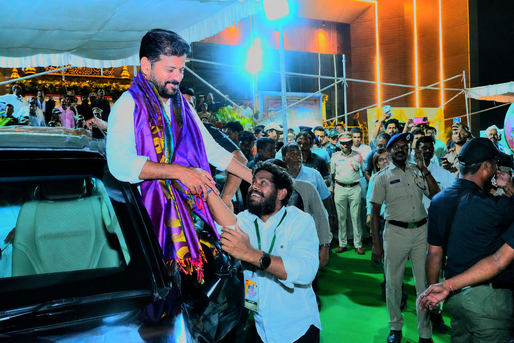
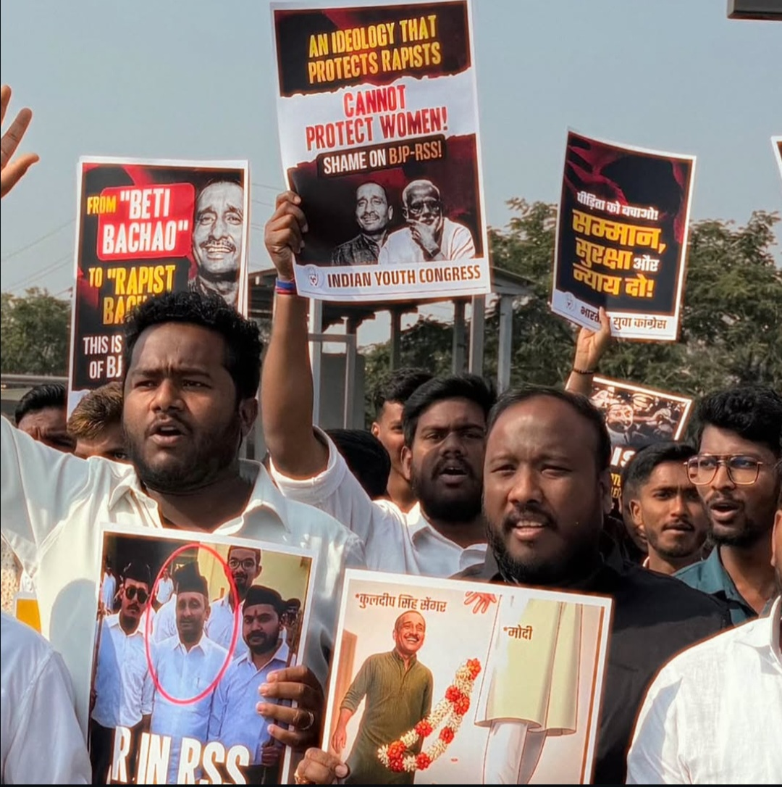
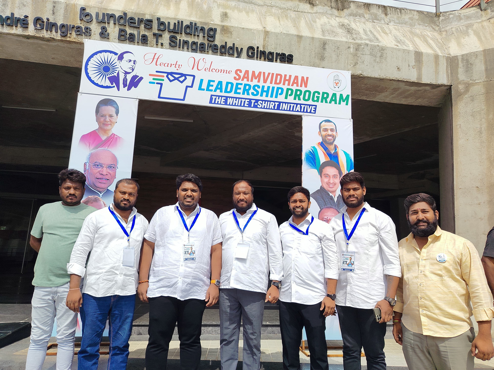
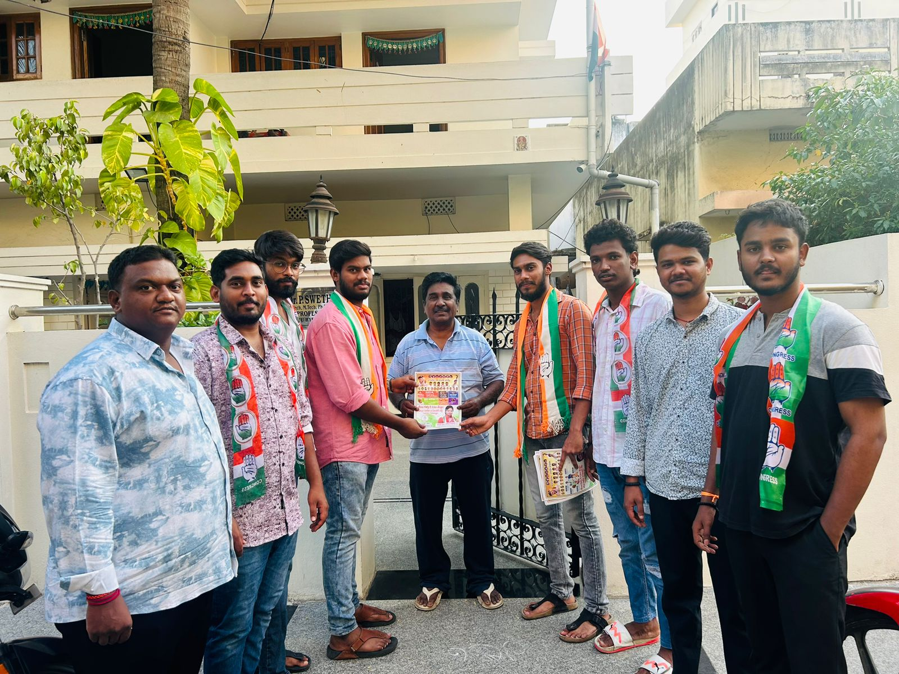
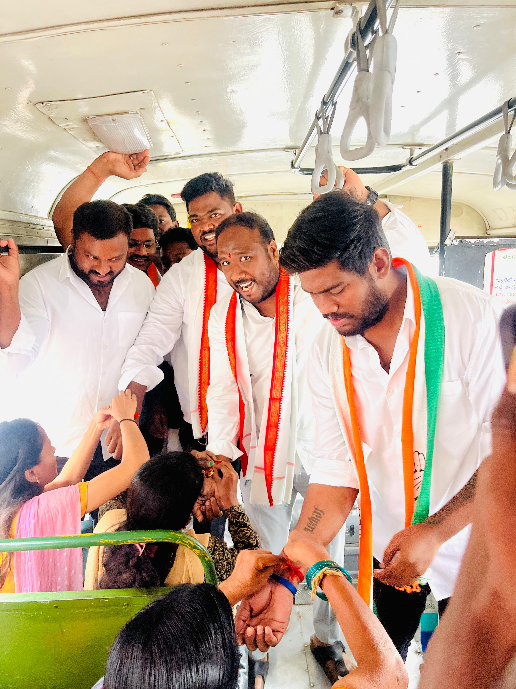
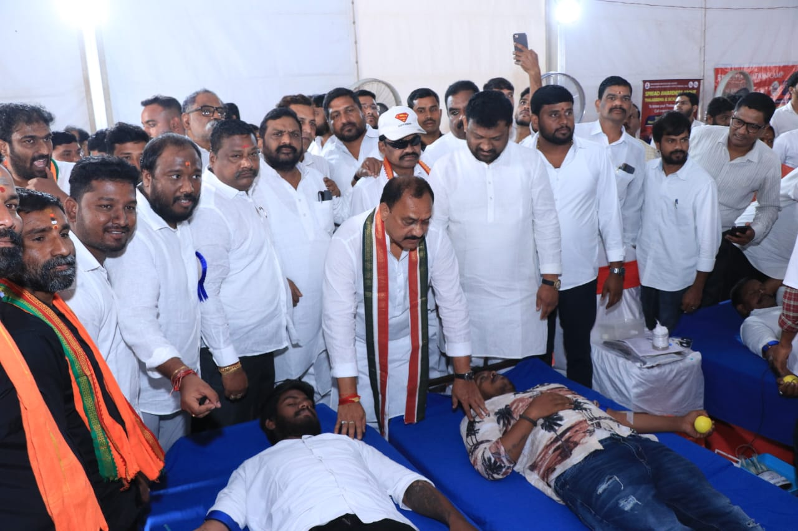

Youth Development
Supporting young people with opportunities, participation and a stronger voice in community life.
A people-first journey focused on youth, community development and meaningful public service.

I believe public service begins with listening, understanding local needs and turning ideas into practical action.
My focus is on constructive community work, opportunities for young people and building stronger connections between citizens and their communities.
Let's work together →Turning commitment into visible, positive work in the community.
Supporting young people with opportunities, participation and a stronger voice in community life.
Working with people on practical local initiatives and community-focused activities.
Listening to concerns, encouraging dialogue and keeping public needs at the centre of every effort.
Leadership is not about a position. It is about responsibility, service and the courage to make a difference.
PANCHA SACHIN






For community initiatives, collaboration or enquiries, feel free to get in touch.